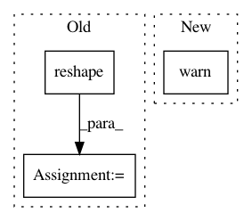

130cbadff294b686e466d430f26b2d069f6bbf59,metric_learn/sdml.py,_BaseSDML,_fit,#_BaseSDML#Any#Any#,65
Before Change
// set up (the inverse of) the prior M
if self.use_cov:
X = np.vstack({tuple(row) for row in pairs.reshape(-1, pairs.shape[2])})
prior_inv = np.atleast_2d(np.cov(X, rowvar=False))
else:
prior_inv = np.identity(pairs.shape[2])
diff = pairs[:, 0] - pairs[:, 1]
After Change
def _fit(self, pairs, y):
if self.use_cov != "deprecated":
warnings.warn(""use_cov" parameter is not used."
" It has been deprecated in version 0.5.0 and will be"
"removed in 0.6.0. Use "prior" instead.",
DeprecationWarning)
if not HAS_SKGGM:
if self.verbose:
print("SDML will use scikit-learn"s graphical lasso solver.")
else:
In pattern: SUPERPATTERN
Frequency: 3
Non-data size: 3
Instances
Project Name: metric-learn/metric-learn
Commit Name: 130cbadff294b686e466d430f26b2d069f6bbf59
Time: 2019-06-07
Author: 31916524+wdevazelhes@users.noreply.github.com
File Name: metric_learn/sdml.py
Class Name: _BaseSDML
Method Name: _fit
Project Name: metric-learn/metric-learn
Commit Name: 130cbadff294b686e466d430f26b2d069f6bbf59
Time: 2019-06-07
Author: 31916524+wdevazelhes@users.noreply.github.com
File Name: metric_learn/lsml.py
Class Name: _BaseLSML
Method Name: _fit
Project Name: keras-team/keras
Commit Name: 4c3495896e77a5a4ebfeff717feb3d04681d27e7
Time: 2015-06-23
Author: xavier@whirlscape.com
File Name: keras/activations.py
Class Name:
Method Name: time_distributed_softmax